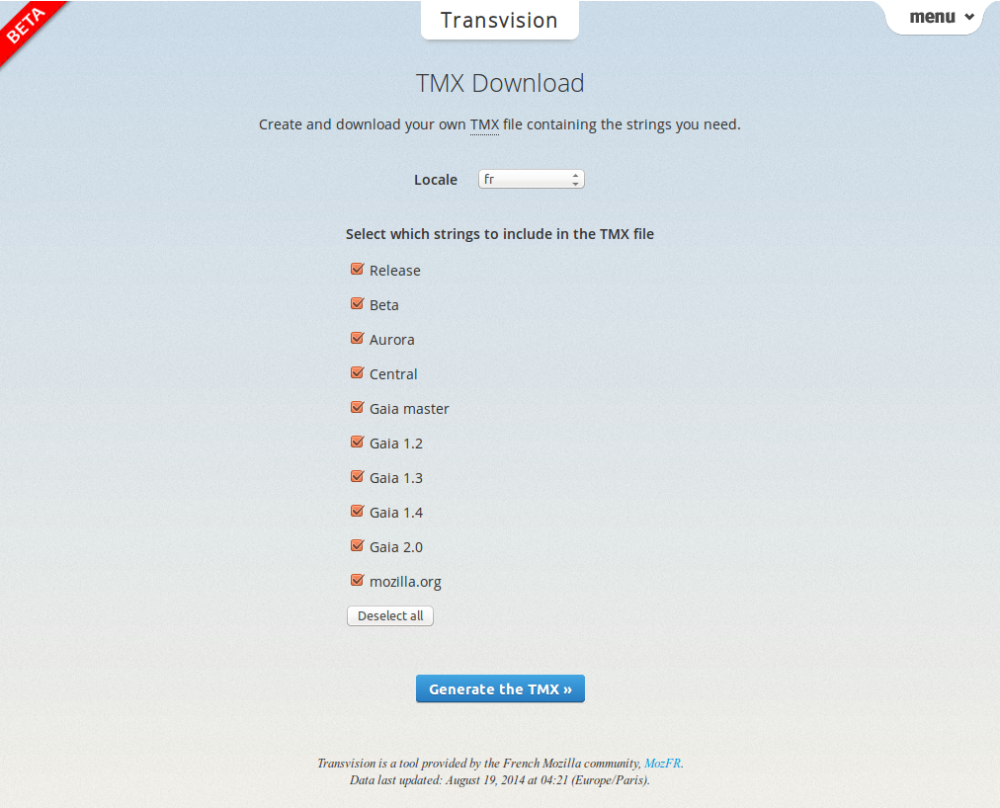
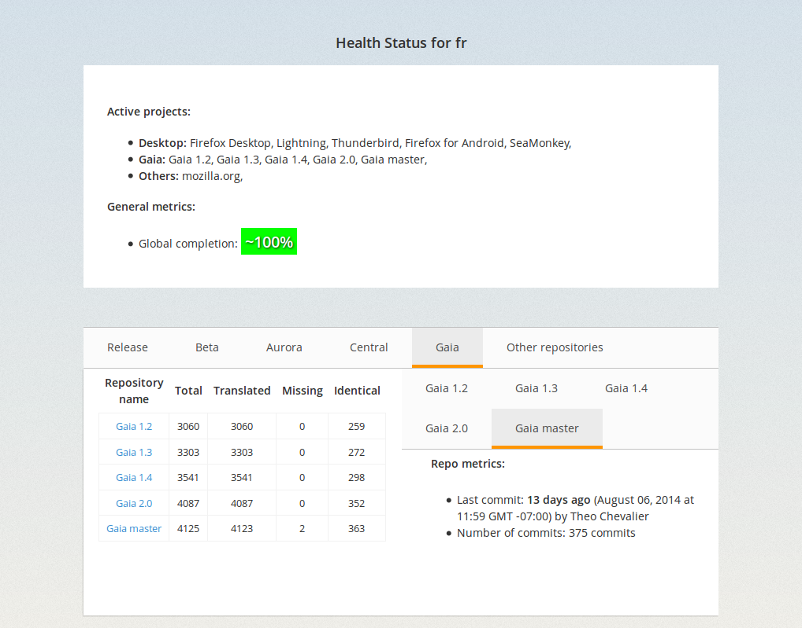
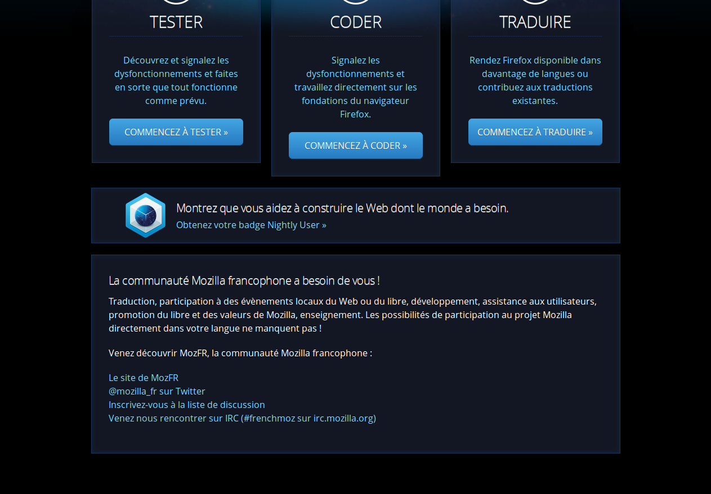

Growing the Community with First-Class Citizen Localization
Théo CHEVALIER – Mountain View – 08/20/2014
Localization
Nope, it’s not replacing words with other fancy words.
Main projects I worked on
- Firefox OS
- Mozilla.org
- Transvision
Dynamic TMX file generator

Health Status view


How can I help?

As a developer
- String change? Update entity name
- Don’t reuse strings in different contexts
- Respect string freeze
As a localizer
- Localize early
- Report l10n related bugs
- Test on devices!
I’ve been home. Really.